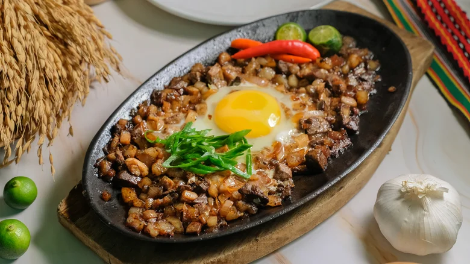

Sisig
Sisig is a Filipino dish made from pork jowl and ears (maskara), pork belly, and chicken liver, which is usually seasoned with calamansi, onions, and chili peppers. It originates from the Pampanga region in Luzon.
- 1 lb pig ears
- 1 lb. pig snout
- 1 lb pork belly
- 2 pieces onions minced
- 3 pieces bay leaves
- 2 teaspoons salt
- 4 thumbs ginger crushed
- 1 quarts water
- ½ cup Lady's Choice Mayonnaise
- 2 tablespoons sukang iloko see note 1
- ¼ teaspoon ground black pepper
- 1 teaspoon salt
- 1 teaspoon sugar
- ¼ cup liver spread see note 2
- 2 limes see note 3
- 1 tablespoon Knorr Liquid Seasoning
- Step 1. Combine pig ears, snout, pork belly, ginger, bay leaves, 2 teaspoons salt, and 1 quart of water in a cooking pot. Boil for 1 hour. Remove from the pot and drain the water.
- Step 2. Heat-up your grill. Start grilling the pig parts for around 5 minutes per side. Remove from the grill afterwards and let it cool down.
- Step 3. Make the dressing by combining all the dressing ingredients. Mix well.
- Step 4. Chop the grilled pig parts into small pieces. In a large mixing bowl, combine the chopped pork with onion and the dressing mixture. Toss until all the ingredients are well blended.
- Step 5. Transfer to a serving plate. Serve with your favorite drink. Share and enjoy!